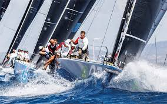

Regardless of whether you want to learn your first invert, add another rotation to your favorite spin, or finally get a solid wake jump under your belt, wakeboard camp is the place to do it. At wakeboard camp, the mission is to get you safely to your next level through face-to-face professional instruction — all while having the best time of your life. The camps and schools on this list — presented in alphabetical order — have set themselves apart over the years by providing exemplary service and next-level results without the punishing falls. Consider this the first step on your path to wakeboarding progression.
Yachting
Yachting is the use of recreational boats and ships called yachts for racing or cruising. Yachts are distinguished from working ships mainly by their leisure purpose. "Yacht" derives from the Dutch word jacht ("hunt"). With sailboats, it is the activity is called sailing, and with motorboats, it is called powerboating.
Kitesurfing
Kiteboarding, also known as kitesurfing[1], is an action sport combining aspectsof wakeboarding, snowboarding, windsurfing, surfing, paragliding, skateboarding and sailing into one extreme sport. A kiteboarder harnesses the power of the wind with a large controllable power kite to be propelled across the water, land, or snow.
Wakeboarding
Wakeboarding is a water sport in which the rider, standing on a wakeboard (a short board with foot bindings), is towed behind a motorboat across its wake and especially up off the crest in order to perform aerial maneuvers.A hallmark of wakeboarding is the attempted performance of midair tricks.
Pricing
| Activity | 10 minutes | 30 minutes | 60 minutes |
|---|---|---|---|
| Kitesurfing | 10 $ | 25 $ | 50 $ |
| Wakeboarding | 5 $ | 10 $ | 20 $ |
| Yachting | 1-7 Days | 8-10 Days | 11-15 Days |
|---|---|---|---|
| Cost per day: | 30 $ | 25 $ | 22 $ |